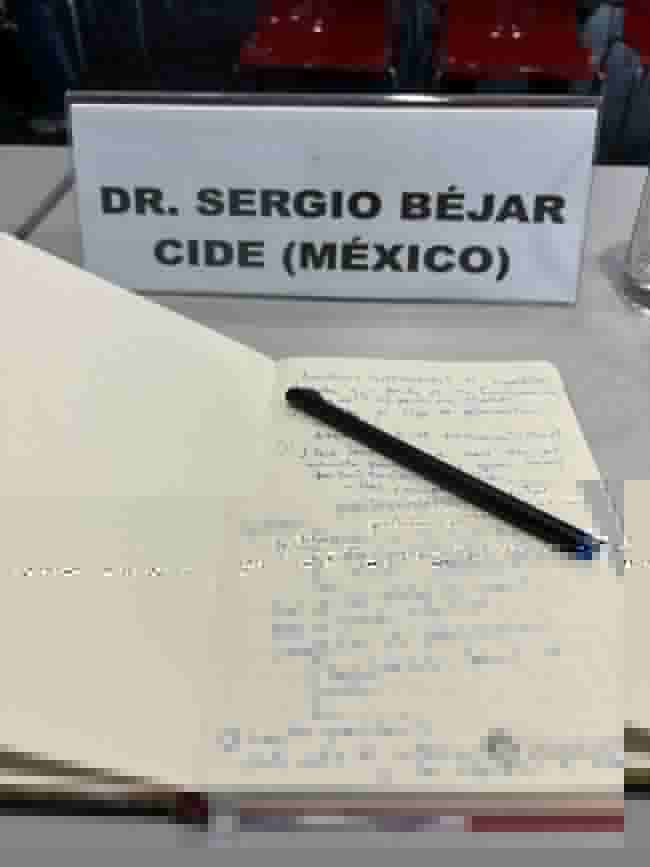

Political behavior & democratic accountability Comportamiento político y rendición de cuentas democrática
Subnational politics & electoral competition Política subnacional y competencia electoral
Comparative political economy Economía política comparada
Methods & software Métodos y software
Research in circulationInvestigación en circulación
Work in progressTrabajo en curso
Before publication, I present my research at seminars and conferences. Comments from colleagues help me identify problems in the argument, reconsider empirical decisions, and define more precisely what the results can—and cannot—show.
Antes de publicar, presento mis investigaciones en seminarios y congresos. Los comentarios de colegas me ayudan a identificar problemas en el argumento, revisar decisiones empíricas y precisar qué pueden —y qué no pueden— mostrar los resultados.
